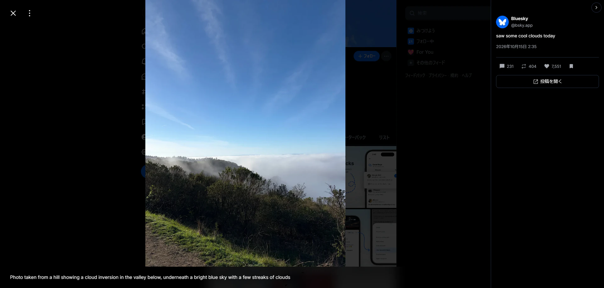
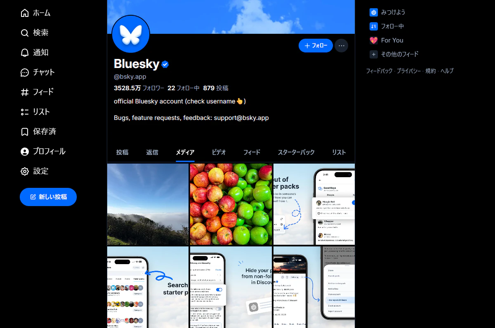
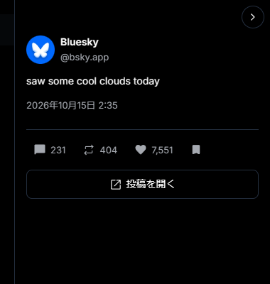
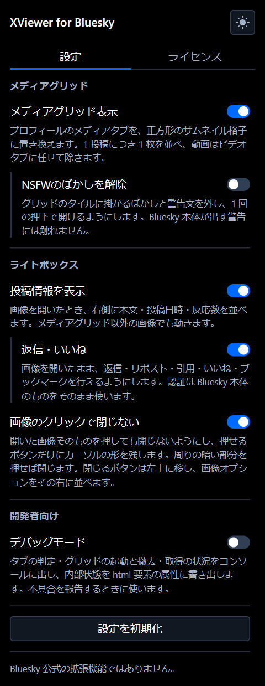

For Chrome / Brave / Edge
See Bluesky media the way you see it on X.
A profile's Media tab becomes a grid of square thumbnails. Open an image and the post's text, date, counts and replies appear on the right, where you can reply (with images, a video or a GIF), repost, like or bookmark right away. Clicking the image itself no longer closes it, so you won't be thrown back to the list halfway through.
Not available on any extension store yet. See Install for how to load the zip. The extension's interface is in Japanese only.

Browse and react, right where you are
Opening images one at a time, going back, and jumping to another screen just to check a post. This extension cuts down on that back and forth.
Media as a grid
Replaces a profile's Media tab with a three-column grid of square thumbnails. One tile per post; posts with several images get an icon on the first image. Videos are left to the Videos tab. Scroll to the bottom to load more.
Post details panel
When you open an image, the author, text, date, counts and an "Open post" button appear on the right, with the replies listed below, newest first. Images attached to replies show as thumbnails; click one to switch to that image. GIFs, link cards and quotes in replies show as cards too. It works wherever you open an image on Bluesky, not only from the grid. Links, mentions and hashtags in the text work too. The panel can be collapsed.
React without closing
Reply, repost, quote, like and bookmark without closing the image. Replies are written and sent from a text box in the panel, with up to 10 images, one video or one GIF. A link pasted into the text becomes a link card, and a post URL becomes a quote. You can add alt text and captions, crop, set content warnings, pick post languages and insert emoji, and you can delete your own replies. A like or other reaction shows up the moment you press it, and if the request fails it goes back and tells you. It uses Bluesky's own sign-in as is and never touches your login credentials.
Clicking the image keeps it open
Clicking the image itself no longer closes the lightbox, and the pointer turns into a hand only over buttons you can press. Click the dark area around it to close as before. The close button moves to the top left, with the image options next to it.
Buttons to switch tabs
Adds "Videos / Media / Posts / Back to top" buttons at the bottom right of a profile. The button for the tab you are on is hidden, and "Back to top" appears once you scroll. The buttons stay in place, so you can go back and forth by pressing the same spot.
Remove the blur (optional)
When turned on in the settings, removes the NSFW blur and warning text from tiles in the grid so a single click opens them. Only grid tiles are affected; warnings shown by Bluesky itself are left alone. Off by default.
The Media tab, as a grid you can scan
Using posts fetched from Bluesky's public API, it lays out each post with images as one square tile. Clicking a tile opens Bluesky's own lightbox, so zooming and moving between images work just like they do in Bluesky.
- More posts are fetched only when you scroll to the bottom. Nothing is prefetched
- Moving to another account leaves none of the previous account's images behind
- Labeled images are blurred, just like in Bluesky. (You can remove this in the settings)
- Go back to the Posts tab and Bluesky looks the way it always does

What the post says, next to the image
The panel shows the author, text and date, along with the number of replies, reposts and likes. The buttons below let you react without closing the image. Each kind of button has its own color, and posts you have already reacted to show that color from the start.
- The repost button opens a menu to choose between repost and quote
- Replies are listed below the panel, newest first, and "Show replies" opens the replies to a reply
- You can send a reply right from the text box in the panel. The "Quote" item of the repost button opens Bluesky's own composer on top of the lightbox
- A reply can carry up to 10 images (pick, paste or drop them on the text box). Alt text, cropping, content warnings, post languages and emoji work just like Bluesky's own reply screen
- GIFs come from the same GIF search Bluesky uses (KLIPY). A link pasted into the text becomes a link card, a Bluesky post URL becomes a quote, and links in the text are sent in the same shortened form as Bluesky's own app
- A video can be up to 300MB and 10 minutes (mp4, webm, mov or mpeg). It is sent as the original file, not shrunk, and the upload starts as soon as you attach it. Progress is shown, and sending waits until processing finishes. Alt text and one caption file (.vtt, up to 20KB) are added in the "Captions and ALT" sheet. A video cannot be attached together with images or a GIF, but can be sent together with a quote
- Videos in the reply list show as a thumbnail card and play in place when clicked. GIF-style videos play muted. If playback fails, "View in post" takes you to the reply
- GIFs in the reply list play muted. (When your OS is set to reduce motion, they play only when you click them) Link cards open in a new tab, and quotes take you to the quoted post
- The action buttons are not shown when you are signed out
- "Open post" takes you to the post without reloading the page

Settings live in the popup
Open it from the toolbar icon. Grouped into Media grid, Lightbox and Developer, each feature has its own on/off switch.
- Changes take effect right away, without reloading the page
- Related options are nested; a child can't be changed while its parent is off
- The popup can switch between dark and light. By default it follows your OS
- "Reset settings" restores every setting to its default after a confirmation

Install
The extension is not on any store yet. Load the zip from GitHub Releases on your browser's extensions page.
Chrome / Brave / Edge
- Download
XViewer.for.Bluesky_version.zipfrom GitHub Releases and unzip it - Open
chrome://extensionsand turn on "Developer mode" at the top right (brave://extensionson Brave,edge://extensionson Edge) - Click "Load unpacked" and choose the unzipped folder
- Reload any open bsky.app tabs
Updating to a new version
- Unzip the new version over the previous one, into the same folder
- On the extensions page, press the reload button on the XViewer for Bluesky card
- Reload your bsky.app tabs
If you delete the unzipped folder, the extension can no longer be loaded. Keep it where it is.
Firefox (experimental)
- Get the source and run
npm installandnpm run buildwith Node.js 24.2 or later - Open
about:debuggingand choose "This Firefox" - Click "Load Temporary Add-on" and choose
dist-firefox/manifest.json
Temporary add-ons are removed when Firefox closes. It has not yet been tested much on Firefox.
What you can change
Everything is set from the toolbar popup. Indented options belong to the option above them and can't be changed while the parent is off. (A child keeps its setting, and comes back as it was when the parent is turned on again) Settings are kept in your browser's sync storage and are never sent anywhere else. (Only the post languages you pick in the reply box are kept in this browser's local storage) The popup shows these options in Japanese.
| Group | Option | Default | What it does |
|---|---|---|---|
| Media grid | Show media grid | On | Replaces a profile's Media tab with a grid of square thumbnails. Turn it off to get Bluesky's own view back |
| Media grid | Remove NSFW blur | Off | Removes the blur and warning text from grid tiles. Warnings shown by Bluesky itself are left alone |
| Lightbox | Show post details | On | Shows the text, date and counts on the right when you open an image. Works for images outside the grid too. Not shown when the window is narrow |
| Lightbox | Reply and like | On | Adds reply, repost, quote, like and bookmark buttons to the panel. When off, only the buttons go away and the panel stays |
| Lightbox | Reply list | On | Lists the replies below the panel when you open an image. With "Reply and like" also on, you can write replies (with images, a video, a GIF, a link card or a quote) and delete your own right there |
| Lightbox | Don't close on image click | On | Keeps the lightbox open when you click the image itself, and leaves the hand pointer only on buttons. Moves the close button to the top left, with the image options next to it |
| Developer | Debug mode | Off | Logs tab detection, the grid starting and stopping, and fetching to the browser console, and writes the internal state to an attribute on the html element. Useful when reporting a bug |
Requirements
Works on Chromium-based browsers that support Manifest V3.
Browsers
Chromium-based browsers such as Chrome, Brave and Edge. Chrome 120 or later is required. It can also be built for Firefox (Firefox 140 or later), but only as a temporary add-on, and it has not yet been tested much there. Safari is not supported.
Where it works
Pages on https://bsky.app/. The grid and tab buttons appear on profiles; the post details panel and lightbox tweaks work wherever you open an image on bsky.app. It does nothing on other sites or in the mobile apps.
License
MIT License, with the source code on GitHub. The disclaimer and notices for bundled third-party work (Material Symbols for the icons, Emoji Mart for the emoji picker, hls.js for video playback) are in the License tab of the popup.
Languages
The extension's interface (popup, panel and buttons) is currently Japanese only. It works whatever language you use Bluesky in, but the parts the extension adds are shown in Japanese.
Bug reports and requests
Please send bug reports, questions and feature requests to GitHub Issues. You are welcome to write in English. For a bug, turning on "Debug mode" in the popup and including what it prints to the console makes the cause much easier to find.
Your data stays with Bluesky
This extension has no server of its own. The only traffic is to Bluesky's public API, Bluesky's own requests that it borrows to load replies and to send the reactions and replies (including attached images) you choose, and Bluesky's relay services for GIFs and link cards in replies (gifs.bsky.app / cardyb.bsky.app), the GIF provider, and Bluesky's video service (video.bsky.app) for videos in replies. GIF search terms and link URLs go to the same places Bluesky's own reply screen sends them.
What it does not collect
Browsing history, post or account IDs, login tokens, passwords, or personal information. None of these are read, stored or sent. It only borrows Bluesky's own sign-in and never touches the tokens themselves.
What it stores
The seven switches you choose, the popup's theme, whether the post details panel is collapsed, and the post languages you pick in the reply box. All of it stays in your browser and is never sent to an outside server.
Permissions
Just two: storage and https://public.api.bsky.app/*. Its scripts run only on bsky.app pages, and it asks for no access to other sites.
This is an unofficial extension.
It is not made or distributed by Bluesky Social PBC. It has no connection with the company and is not partnered with, supported or endorsed by it.
- Use it at your own risk. Neither the author nor Bluesky Social PBC is responsible for any damage caused by using this extension
- Each like, repost, bookmark or reply you send goes to Bluesky from your account. Likes, reposts and replies are public, just as when you use Bluesky directly
- A reply is posted only when you press "Send" or Ctrl+Enter (Cmd+Enter on Mac) in the panel's text box. Attached images, the thumbnails of link cards and GIFs, and caption files are uploaded to your account's server (PDS) only at that moment. An attached video is the exception: it is uploaded to Bluesky's video service (
video.bsky.app) as soon as you attach it. (It is uploaded even if you never send; removing it or closing the box stops it midway) In Bluesky's own composer opened from the "Quote" item of the repost button, a post is made only when you send it - The only posts the extension can delete are your own replies in the reply list, and only after you press "Delete" and then confirm. It never creates or deletes posts that are not replies, and never follows, blocks or sends DMs
- It has no way to collect images. There is no downloading and no bulk automation; it only fetches the posts of the profile you are viewing
- Changes on Bluesky's side may stop it from working